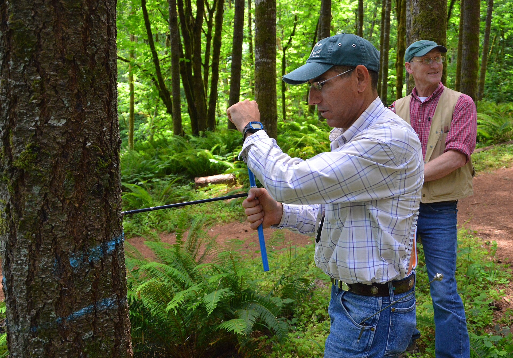

Forest Inventory
and Sampling
From a clearly defined population to defensible estimates using fixed-area sample plots.
Royal University of Bhutan
→ inventory estimates
Measurements become management evidence
Unit VIII
Earlier units measured individual trees and a stand. Inventory asks: what do those measurements say about the whole forest?
Apply one written protocol to selected fixed-area plots.
Expand plot measurements to hectares and the defined population.
Use results for planning, monitoring, harvesting, restoration and reporting.
State the objective, population, design, date, units and uncertainty with every inventory result.
By the end, you can plan, measure and interpret
Unit VIII
Define forest inventory and distinguish its major purposes and types.
Explain census, sampling, population, sample, sampling unit and frame.
Select among simple random, systematic, stratified and cluster designs.
Lay out circular, square, rectangular, strip and nested fixed-area plots.
Calculate plot area, sampling intensity and hectare expansion factor.
Derive trees/ha, mean DBH and height, basal area/ha and volume/ha.
Distinguish sampling error from non-sampling errors and reduce both.
Complete Practical 9 and interpret results for a stated management question.
Introduction to forest inventory
A systematic enquiry: define the question, measure relevant variables, estimate the resource and report the quality of the answer.
Inventory begins with a decision question
Unit VIII
The systematic collection, analysis and reporting of information about forest resources within a defined area and time.
An inventory may include species, regeneration, damage, deadwood, canopy, habitat, biomass, carbon, land use and evidence of disturbance.
- Resource assessment
- Management planning
- Timber and stocking assessment
- Growth monitoring
- Biomass and carbon
- Biodiversity-related variables
- National reporting
- Restoration monitoring
Example: “Estimate current merchantable volume by forest type for a five-year management plan” is actionable. “Measure the forest” is not.
One word, six different inventories
Unit VIII
| Type | Purpose | Scale | Typical variables | Frequency | Likely output |
|---|---|---|---|---|---|
| Reconnaissance | Rapid orientation | Project / landscape | Forest type, access, broad condition | Before detailed work | Map, strata, feasibility notes |
| Management | Plan operations | Forest management unit | Species, DBH, height, defects, volume | Planning cycle | Stocking and growing-stock tables |
| National | National status and trends | Country | Land use, tree attributes, health, carbon | Periodic / continuous | National estimates with uncertainty |
| Continuous | Measure change | Stand to national | Tagged-tree survival, growth, recruitment | Repeated interval | Increment and change estimates |
| Pre-harvest | Plan and control harvest | Harvest block | Merchantable trees, quality, location | Before harvest | Tree list, volume and operational map |
| Carbon | Estimate carbon pools / change | Project to national | DBH, height, species, deadwood, litter, soil | Monitoring cycle | t biomass/ha and t C/ha |
Sustainable management uses inventory to compare present condition with objectives, set treatments, monitor response and revise decisions. The inventory type must match the decision scale.
From the forest population to an estimate
Unit VIII
All units about which conclusions are required: e.g., all trees ≥10 cm DBH in a management unit.
The subset actually observed: e.g., 24 selected 500 m² plots.
The unit selected by the design: one plot, one cluster or one strip.
The operational representation from which units can be selected: a mapped grid or plot list.

NRCS Oregon · public domain{kind=link}
Measure everyone—or learn from a defensible subset
Unit VIII
- Measures every eligible unit in the defined population.
- Advantages: complete tree list; useful for small/high-value pre-harvest blocks.
- Limitations: expensive, slow and still vulnerable to measurement or recording error.
- Does not automatically mean “error-free”.
- Measures selected units and estimates population characteristics.
- Advantages: quicker, cheaper, allows stronger training and quality control.
- Limitations: sampling error; poor frame or biased selection can mislead.
- Usually appropriate for extensive forests.
| Situation | Better starting choice | Reason |
|---|---|---|
| 4 ha high-value harvest block requiring individual tree marking | Census | Operational tree list is required. |
| 8,000 ha management unit requiring volume by forest type | Sampling | Complete measurement is impractical; stratified plots can represent types. |
| Permanent growth monitoring | Sample of permanent plots | Repeated, tagged measurements reveal change. |
Basic sampling designs
A sampling design is the rule that gives sampling units a known, defensible path into the sample.
Every plot has an equal selection chance
Unit VIII
- Define population and complete frame.
- Number candidate units or generate eligible coordinates.
- Select using a random mechanism.
- Measure selected units without convenient replacement.
Clear probability basis; straightforward analysis; protects against deliberate placement.
Plots may cluster or leave gaps; travel can be inefficient; needs a good frame.
Use: compact, accessible, fairly homogeneous forest with a complete frame.
A random start, then a regular grid
Unit VIII
Choose grid spacing from required intensity and logistics; select a random origin; generate intersections; retain every eligible point according to the written rule.
Good spatial spread; simple navigation; efficient field routing; common in large forest inventories.
A hidden periodic landscape pattern can align with the grid; inference must reflect the actual design.
Bhutan example: the Second NFI used a systematic national grid and permanent cluster plots; this is context, not a design to copy blindly for every management inventory.
Group the forest—or group the field work
Unit VIII
- Divide population into non-overlapping, meaningful strata such as forest type or elevation band.
- Sample within every stratum; combine with correct stratum areas/weights.
- Advantage: ensures representation and may improve precision.
- Risk: poor or outdated stratum map; wrong weighting.
- Select groups of nearby plots; the cluster—not each subplot independently—is commonly the sampling unit.
- Advantage: reduces travel and organizes multiple measurements.
- Risk: nearby plots may be similar, reducing information per plot; analysis must respect clustering.
- Use: extensive or difficult terrain when travel dominates cost.
Choose for the objective and landscape
Unit VIII
| Design | Selection pattern | Main strength | Main limitation | Suitable forestry application |
|---|---|---|---|---|
| Simple random | Independent random units | Transparent probability basis | Uneven spread; travel | Compact homogeneous block |
| Systematic | Random start + fixed interval | Even coverage and navigation | Possible periodic alignment | Management or national grid |
| Stratified | Separate sample in each stratum | Represents key forest types | Needs good strata and weights | Mixed types/elevation zones |
| Cluster | Groups of nearby plots | Lower travel cost | Correlated nearby plots | Large, difficult landscapes |
Which variable and decision?
Forest types, size classes, terrain?
How reliable must the estimate be?
Access, time, crew, safety and cost?
Never move an inconvenient selected plot to a “better” place. Follow the written non-response rule and document what happened.
Fixed-area sample plots
Every included stem comes from a known ground area—the foundation for trees, basal area and volume per hectare.
Same area, different field behaviour
Unit VIII
Small perimeter for area; one centre and radius. Common for tree plots.
Simple area; corners and right angles take time to establish.
Covers gradients; more boundary per area.
Long narrow rectangle; samples environmental change but has many boundary decisions.
Different fixed areas for different tree-size or vegetation classes.
A plot is a measurement instrument
Unit VIII
- Larger plots include more trees and often reduce plot-to-plot variability, but cost more.
- Small plots are quicker but can contain few trees and more boundary influence.
- Compact plots have less perimeter; strips may capture spatial gradients.
- Use one protocol consistently; do not change shape to fit each site.
- Nested plots measure small stems efficiently without counting them over the full area.
| Temporary | Permanent | |
|---|---|---|
| Purpose | Current condition | Condition and change |
| Trees | Measured once | Tagged and remeasured |
| Centre | May be lightly marked | Monumented and documented |
| Risk | Cannot directly track growth | Disturbance or observer effects |
Bhutan Second NFI: each permanent cluster contained three circular 500 m² plots (12.62 m radius) plus nested subplots. Trees were DBH ≥10 cm; saplings were 5–<10 cm. DBH was measured over bark at 1.37 m and tree height was measured for trees within the plot.
Scope: MEN 201 intentionally emphasizes fixed-area plots. This teaching scope does not represent every approved operational inventory design used in Bhutan.
The boundary rule decides which trees exist in your data
Unit VIII
- Navigate to the preselected centre; do not optimize it.
- Confirm identifier, coordinates, date, crew and protocol.
- Mark centre; orient north; measure horizontal radius/side distances.
- Define boundary before enumerating trees.
- Move systematically; tag/number each included tree once.
- Complete field checks before leaving.
Ground distance on a slope encloses less horizontal area. Follow the inventory’s horizontal-distance or slope-correction procedure.
A common fixed-area rule uses the stem centre at the reference point. Measure distance accurately for doubtful trees; use the governing protocol where it differs. Never decide by how much crown lies inside.
Known area creates a known expansion
Unit VIII
From the marked centre, a 12.62 m horizontal radius defines a 500 m² circular plot. Rounding the radius is a field convention; record the radius used.
500 m² = 0.05 ha. Twenty such plot areas make one hectare.
What fraction of the forest was actually measured?
Unit VIII
Twenty-four plots × 500 m² = 12,000 m² = 1.2 ha sampled in a 600 ha management unit.
- Intensity reports area measured, not whether selection was unbiased.
- More intensity often improves precision, but plot allocation and design also matter.
- Required intensity depends on forest variability, target precision, cost and objective.
Stand-level calculations
Sum what was measured on the plot, then expand only after checking identifiers, units and inclusion.
The bridge from plot to one hectare
Unit VIII
Arithmetic mean DBH = Σd / n and mean height = Σh / n. Do not multiply a mean by 20. The expansion factor applies to counts and totals for a fixed-area plot.
One measured tree contributes 20 trees/ha to a simple count expansion; it does not claim 19 identical physical trees exist.
Eight trees, measured once and used four ways
Unit VIII
| Tree ID | Species | DBH (cm) | Height (m) | Basal area g (m²) | Bhutan PIS volume v (m³) |
|---|---|---|---|---|---|
| P01-T01 | Pinus wallichiana | 28.4 | 19.2 | 0.06335 | 0.541 |
| P01-T02 | Pinus wallichiana | 34.7 | 22.1 | 0.09457 | 0.911 |
| P01-T03 | Quercus griffithii | 22.6 | 16.4 | 0.04011 | 0.331 |
| P01-T04 | Quercus griffithii | 41.2 | 23.5 | 0.13332 | 1.567 |
| P01-T05 | Tsuga dumosa | 31.5 | 20.8 | 0.07793 | 0.691 |
| P01-T06 | Acer spp. | 18.9 | 14.6 | 0.02806 | 0.228 |
| P01-T07 | Rhododendron arboreum | 16.8 | 11.9 | 0.02217 | 0.127 |
| P01-T08 | Pinus wallichiana | 38.1 | 24.0 | 0.11401 | 1.182 |
| Plot totals | 0.57351 | 5.577 | |||
Basal area uses g = π(DBH/100)²/4. Volume uses the Central/Eastern regional general equations for the corresponding Pinus wallichiana, Quercus, Tsuga, Acer and Rhododendron groups in the Second NFI Annex 16.1. In those equations D is metres, H is metres and v is m³.
Calculate—then say what the result means
Unit VIII
Stand density is measured directly as trees/ha or G/ha; stocking compares density against a stated standard. The case plot’s 11.47 m²/ha cannot be called “well stocked” without naming that reference. One plot alone cannot characterize a management unit.
Check a plot total without hiding the method
Unit VIII
Assumption: one fixed-area plot with complete measurement of all included trees. Enter a plot-volume total calculated with documented equations appropriate to species, region and units; this calculator only expands that total.
Sampling error is only one part of uncertainty
Unit VIII
Difference arising because a sample—not the entire population—was observed. It varies among possible samples and is addressed through a sound design, adequate sample size and appropriate estimation.
- Measurement: tape not level, wrong height reading.
- Recording: transposed digits, wrong unit or tree ID.
- Plot location: displaced centre or convenient relocation.
- Species identification: wrong code or unresolved name.
- Coverage: frame misses part of the population.
Before: precise objective, tested frame, written protocol, training and calibrated equipment.
During: independent plot navigation, systematic enumeration, repeat doubtful readings and field range checks.
After each plot: reconcile counts, IDs and units; review outliers while return is possible.
Quality control: supervised check plots, documented corrections and versioned data.
Field procedure · objective to checked plot
Unit VIII
- Define inventory objective and population.
- Select sampling design and justify it.
- Choose fixed-area plot size/shape.
- Prepare frame, forms, codes and equipment.
- Assign crew roles and safety checks.
- Navigate to selected centre; record GNSS coordinates where available.
- Mark boundary; identify and number trees.
- Record species, DBH and height.
- Record crown variables and defects where required.
- Resolve doubtful boundary trees by protocol.
- Check identifiers, counts, missing fields and units in the field.
- Calculate trees/ha, mean DBH/height, G/ha and V/ha.
- Summarize species and condition.
- Interpret for the objective.
- Report limitations, uncertainty and recommendations.
Record enough context to reconstruct the result
Unit VIII
| Plot-level fields | Example / unit |
|---|---|
| Inventory / Plot_ID | MEN201-P01 |
| Date · crew · protocol | YYYY-MM-DD · names · version |
| DBH reference height | 1.37 m (Second NFI) or 1.30 m — state protocol |
| Centre coordinates | system, datum, accuracy |
| Shape · dimensions · area | circle · r 12.62 m · 500 m² |
| Slope / aspect / forest type | %, degrees, code |
| Notes / disturbances | controlled vocabulary + remarks |
| Tree_ID | Species | DBH cm | H m | Crown | Defect |
|---|---|---|---|---|---|
| P01-T01 | PIWA | 28.4 | 19.2 | D | 0 |
| P01-T02 | PIWA | 34.7 | 22.1 | C | fork |
| Continue one row per tree; never merge tree records. | |||||
- Preserve the original field record.
- Validate unique Plot_ID + Tree_ID.
- Resolve missing or doubtful fields with notes.
- Calculate each tree’s basal area and approved volume.
- Sum plot values; apply 10,000/A.
- Prepare species, diameter-class and defect summaries.
- Compare results with the stated inventory objective.
- What population does your estimate describe?
- Why was this design and plot chosen?
- Which result most affects the management decision?
- Which error source is most important?
- What cannot be concluded from your sample?
Can you defend the whole chain?
Unit VIII
- Objective too vague for variable selection.
- Convenience plots described as random.
- Changing plot area without recording it.
- Using slope distance as horizontal radius.
- Counting boundary trees by crown position.
- Mixing cm and m in basal-area formulae.
- Multiplying arithmetic means by expansion factor.
- Reporting per-hectare results with no sample size or design.
Key takeaways for field practice
Unit VIII
Start from the decision, population and frame. Selection must follow a written probability rule.
A fixed-area plot has known horizontal area and explicit boundary treatment.
EF = 10,000/A. Apply it to counts and plot totals, not arithmetic means.
Sampling and non-sampling errors differ; both must be controlled and reported.
| Term | Plain-language meaning | Term | Plain-language meaning |
|---|---|---|---|
| Stocking | How fully a site is occupied relative to a stated standard. | Stand density | Amount of trees or growing space per area, e.g. trees/ha or G/ha. |
| Stratum | Non-overlapping population subdivision sampled separately. | Expansion factor | Multiplier that expresses a fixed-area plot total per hectare. |
| Temporary plot | Measured for current condition, not intended for exact relocation. | Permanent plot | Monumented and remeasured to estimate change. |
Sources behind this supplementary unit
Unit VIII
- DoFPS (2023). Second National Forest Inventory, Volume I: State of Forest Report. Sampling and plot methodology.
- DoFPS (2024). Forest Canopy Cover Assessment Guidelines. 500 m² circular plot geometry.
- MEN 201 Units II–VII. Diameter, height, crown, volume, crop and growth methods carried into the inventory.
- Kershaw et al. (2017). Forest Mensuration, 5th ed. Wiley-Blackwell.
- FAO. Forest Inventory module, Sustainable Forest Management Toolbox.
- McRoberts, Tomppo & Czaplewski (2012). Sampling Designs for National Forest Assessments. FAO.
- Husch, Beers & Kershaw (2003). Forest Mensuration, 4th ed. Wiley.
- West (2009). Tree and Forest Measurement, 2nd ed. Springer.
Next: Unit IX preserves this same plot as structured digital data, checks it, cleans it and documents every change.
Test your understanding
Unit VIII · Paper
The unit paper: full marks, time allowed and pass mark are printed on the sheet. Sign in, answer, submit once. Open the paper in its own tab